Left of each pair: as exported. Right: with the preset. Brighter room, real skin, whites reach white. This is a simulation on finished JPEGs; check one RAW shoot in Lightroom.
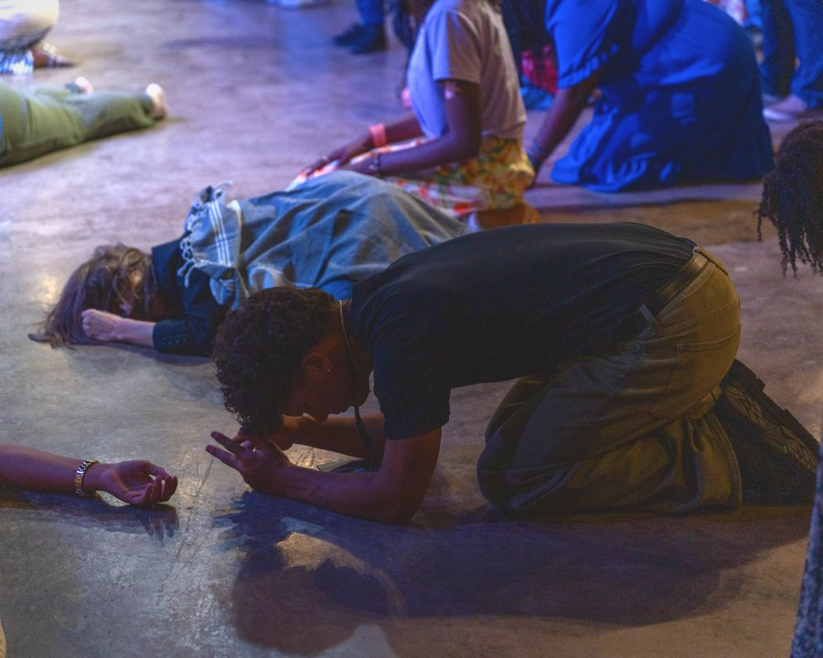
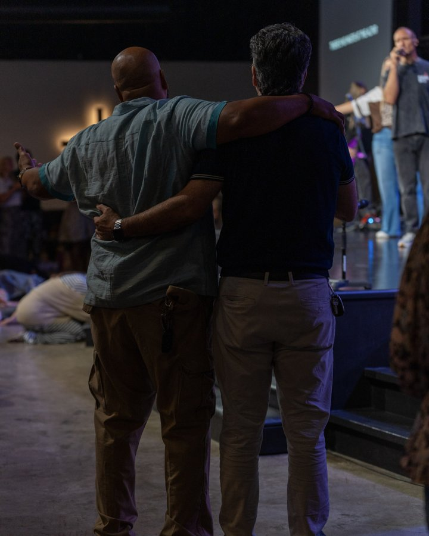
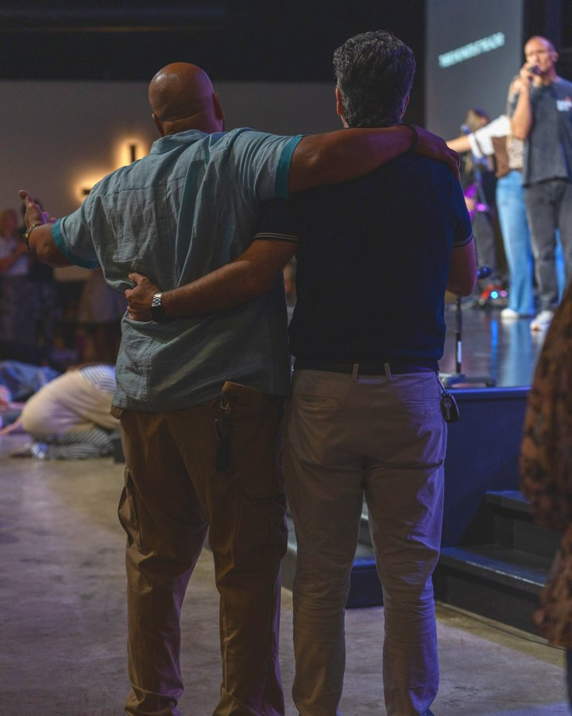
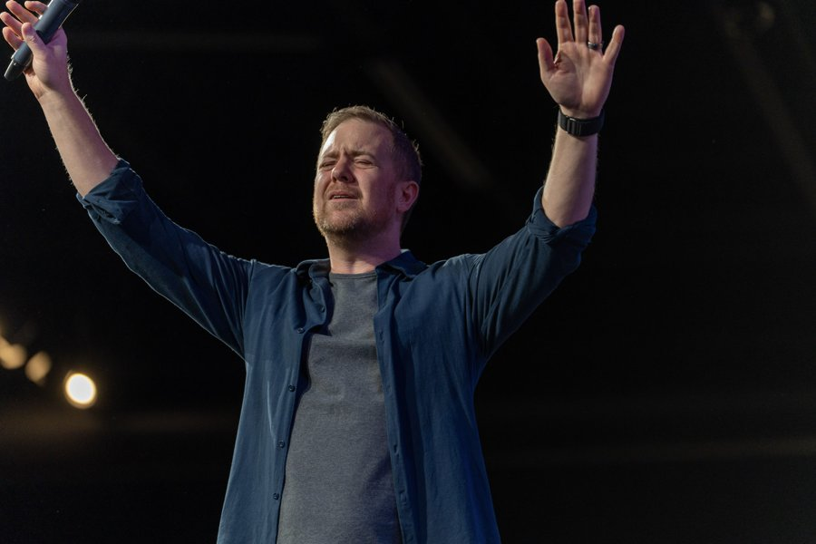
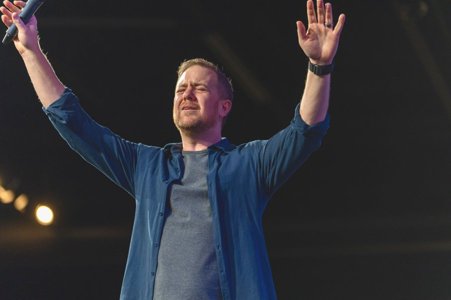
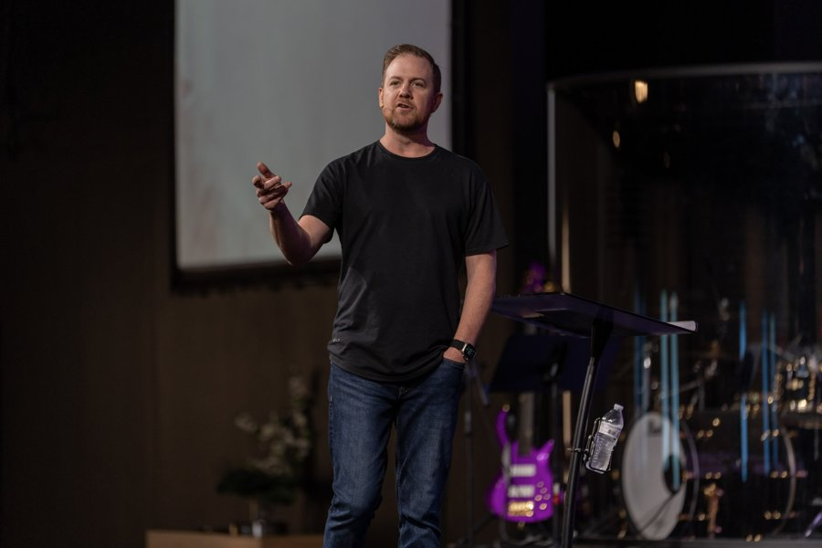
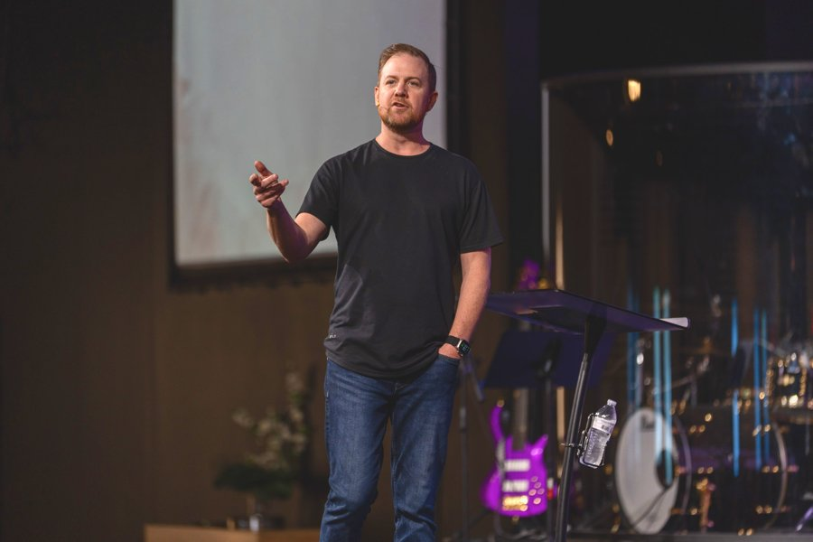
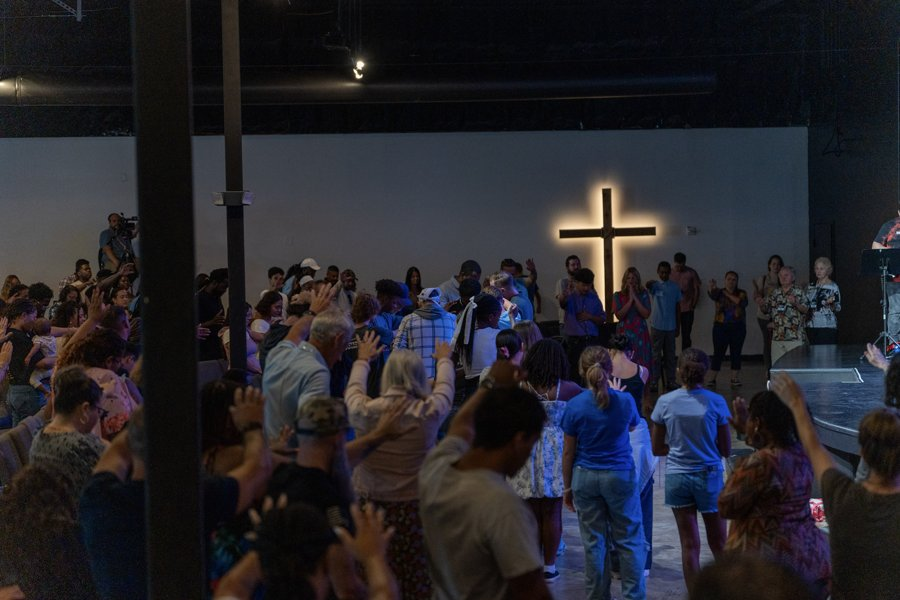
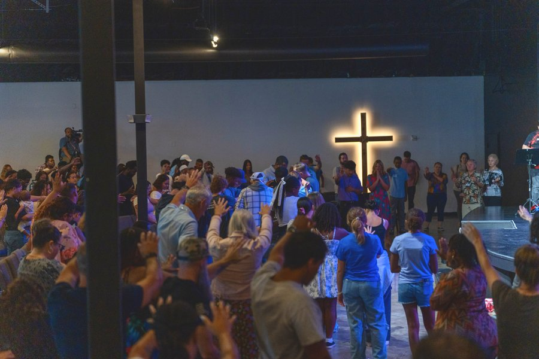
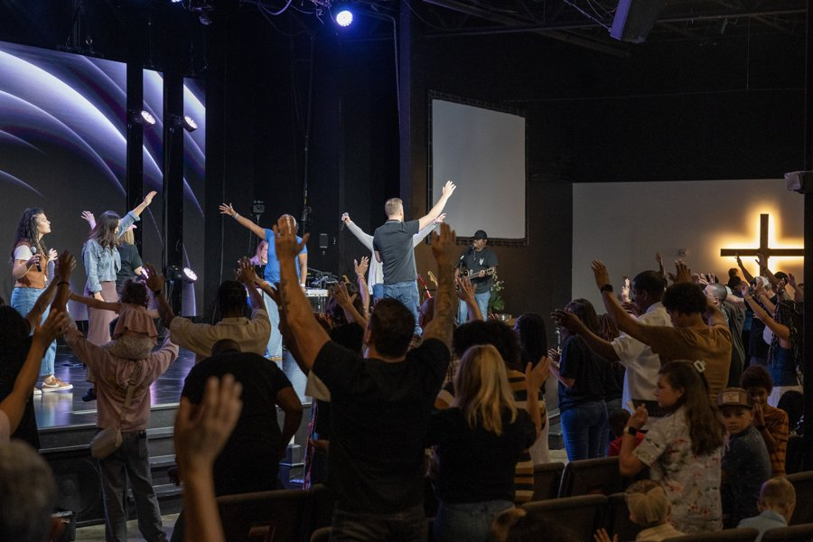
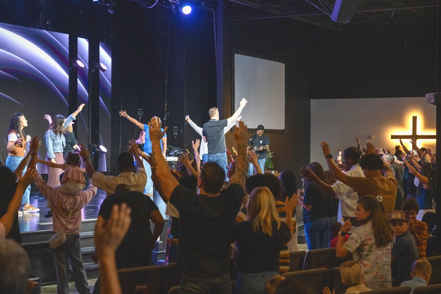
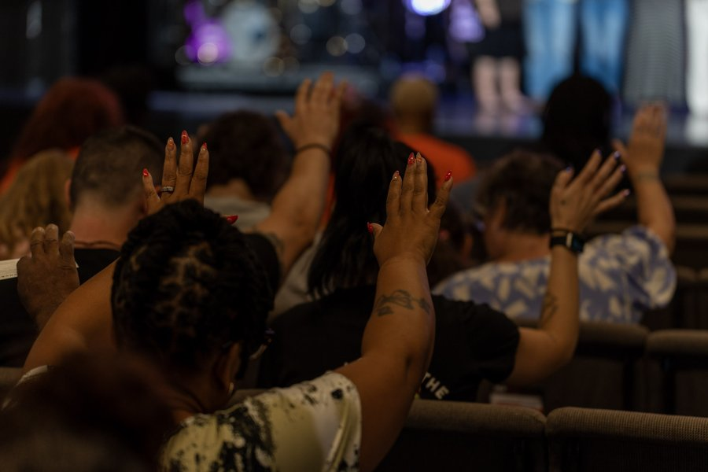
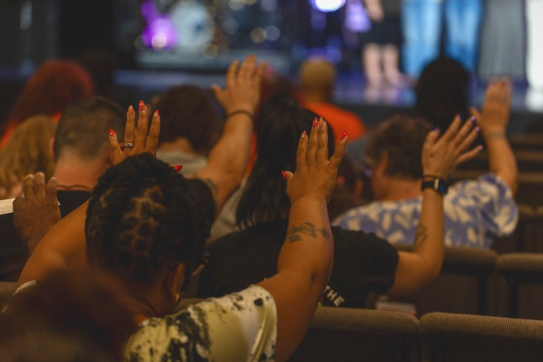
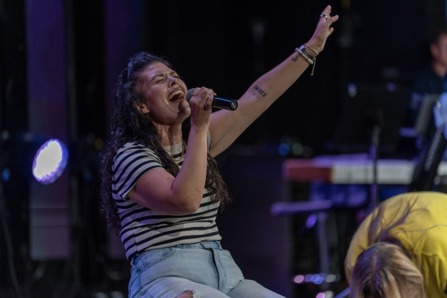
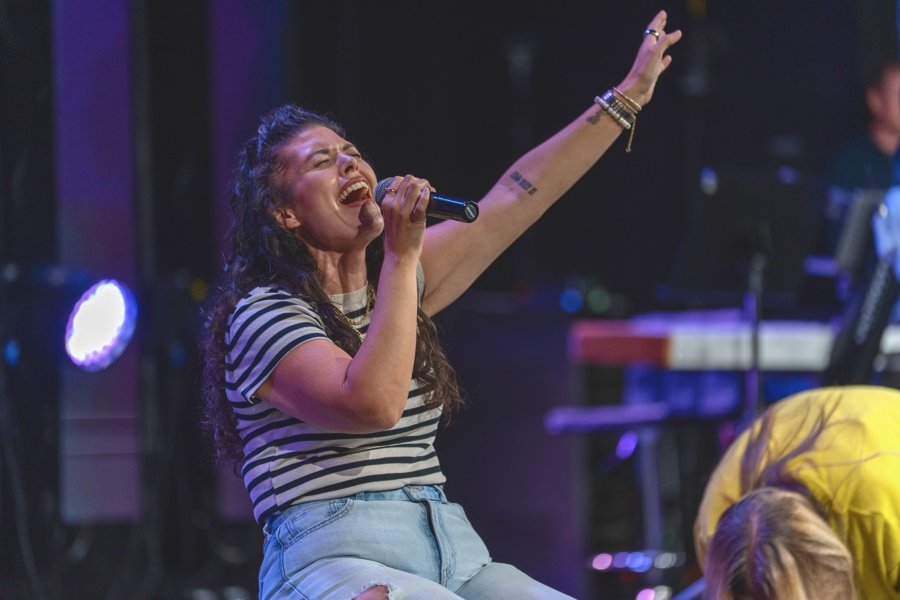
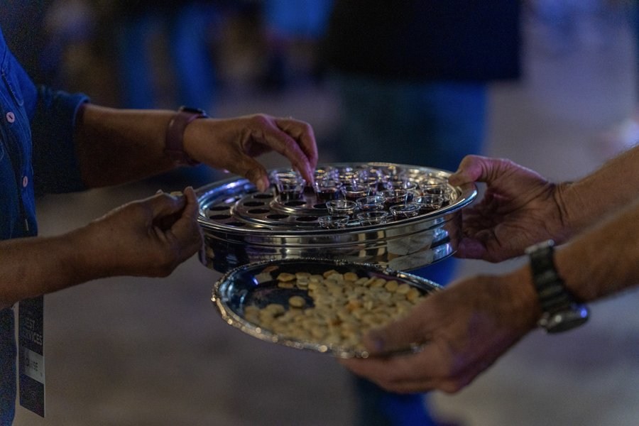
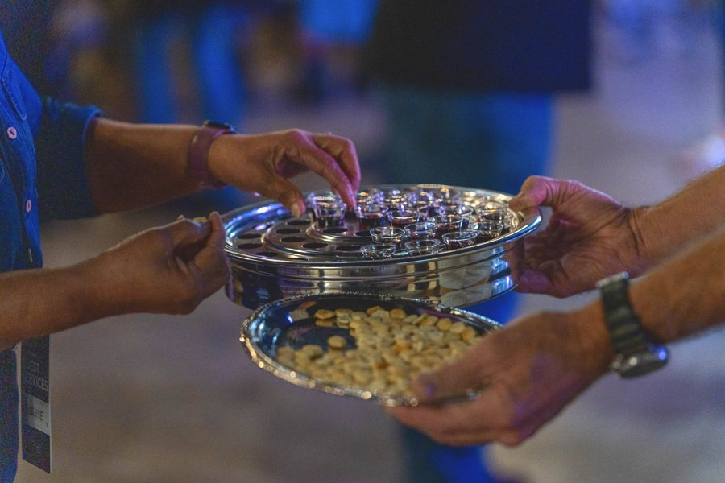
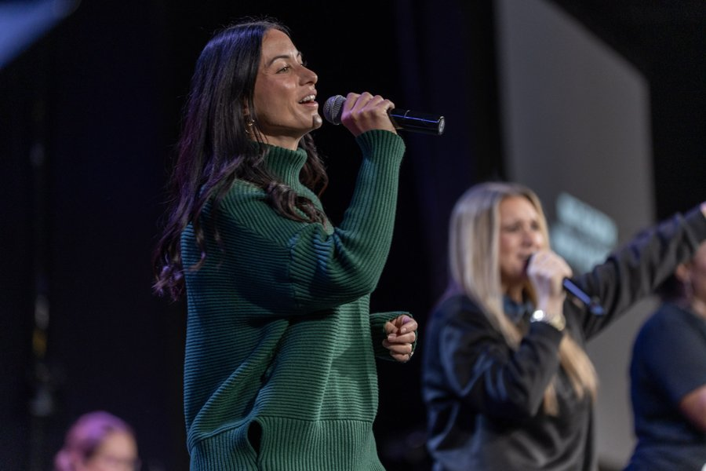
Settings: Exposure +0.70 · Contrast +6 · Highlights -35 · Shadows +35 · Whites +15 · Blacks 0 · Texture -10 · Clarity -20 · Dehaze +6 · Vibrance +10 · Saturation +5 · Curve black 5 · Vignette -8 · Sharpen 60 / mask 85 · Profile corrections on. File: assets/photo/preset/Journey 2026.xmp